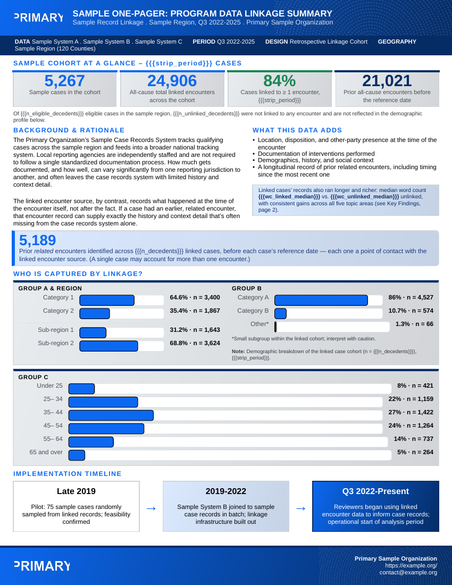

onepagr turns a named list of values into a finished, accessible PDF report using one of its built-in Typst templates. This vignette walks through rendering your first report, picking a theme, and moving on to customizing a template.
Before you start
onepagr needs Quarto (which bundles Typst) on your system. Check whether it’s available:
onepagr::check_quarto()If that reports a problem, install a user-local copy yourself with
onepagr::install_quarto() (onepagr never installs anything
automatically) or install Quarto normally from quarto.org, then restart
your R session.
On macOS and Linux, install_quarto() also points onepagr
at the copy it just installed: it sets QUARTO_PATH for your
current session right away, then asks whether to save that to your
~/.Renviron too, so every future session picks it up
automatically. You’re never expected to hand-edit a
.Renviron file yourself. (Windows opens the official
installer instead, so there’s no path to set until you finish that
yourself.)
If you already have a Quarto install elsewhere onepagr should use
instead (an admin-managed one on Posit Workbench, for example),
onepagr::set_quarto_path("/path/to/quarto") points onepagr
at it the same way, with the same save-for-later prompt.
Render your first report
Every template needs a named list of values, and which values depend
on the template. template_data() gives you a complete,
working starting point for any built-in template: every value is already
filled in, a real one, not a blank you have to guess the shape of.
library(onepagr)
data <- template_data("cohort_summary")
out <- tempfile(fileext = ".pdf")
render_onepager(
data, template = "cohort_summary", theme = "default", output = out
)
file.exists(out)
#> [1] TRUEThat’s the whole workflow: a starter list, a finished PDF.
data here is the package’s own example data (see
example_data()), so this renders exactly the PDF shown
below in “What you get” without changing a thing. A real project
replaces the values it has real numbers for:
data$n_decedents <- "6,000"
data$strip_period <- "2025"
# Every heading, label and paragraph keeps its default wording unless
# you set it too -- see vignette("theming"), Part 5.attr(data, "required") names the entries
template_data() had no default for – the ones a real
project actually needs its own numbers for, as opposed to wording you
can leave alone:
attr(data, "required")
#> [1] "contact_email" "logo_primary_path"
#> [3] "logo_primary_alt" "org_full"
#> [5] "contact_url" "doc_title"
#> [7] "doc_subtitle" "strip_data"
#> [9] "strip_period" "strip_design"
#> [11] "strip_geography" "n_decedents"
#> [13] "n_ems_total" "pct_linked"
#> [15] "n_prior_ems" "n_prior_od_ems"
#> [17] "pct_linked_male_width" "n_male"
#> [19] "pct_linked_female_width" "n_female"
#> [21] "pct_linked_appalachian_width" "n_appalachian"
#> [23] "pct_linked_nonappalachian_width" "n_nonappalachian"
#> [25] "pct_linked_white_width" "n_white"
#> [27] "pct_linked_black_width" "n_black"
#> [29] "pct_linked_other_width" "n_other"
#> [31] "pct_linked_age_lt25_width" "n_age_lt25"
#> [33] "pct_linked_age_25_34_width" "n_age_25_34"
#> [35] "pct_linked_age_35_44_width" "n_age_35_44"
#> [37] "pct_linked_age_45_54_width" "n_age_45_54"
#> [39] "pct_linked_age_55_64_width" "n_age_55_64"
#> [41] "pct_linked_age_65plus_width" "n_age_65plus"
#> [43] "tl1_yr" "tl1_label"
#> [45] "tl2_yr" "tl2_label"
#> [47] "tl3_yr" "tl3_label"
#> [49] "pct_any_prior_enc" "pct_od_prior_enc"
#> [51] "pct_naloxone_width" "pct_no_naloxone_width"
#> [53] "pct_naloxone" "n_naloxone_enc"
#> [55] "pct_no_naloxone" "n_no_naloxone_enc"
#> [57] "domain_diff_scene" "domain_diff_history"
#> [59] "domain_diff_drug" "domain_diff_medication"
#> [61] "domain_diff_mental" "median_days"
#> [63] "mean_days" "pct_30d_width"
#> [65] "n_30d" "pct_90d_width"
#> [67] "n_90d" "pct_365d_width"
#> [69] "n_365d" "pct_gt365d_width"
#> [71] "n_gt365d" "lessons_learned_text"
#> [73] "disclaimer_text" "footnote_sources"
#> [75] "n_od_ems_denom" "timing_denom"
#> [77] "n_eligible_decedents" "n_unlinked_decedents"
#> [79] "wc_linked_median" "wc_unlinked_median"
#> [81] "mean_prior_enc" "median_prior_enc"
#> [83] "pct_decedent_nax" "timing_iqr"You’d typically build those values from your analysis output using
ordinary R (sprintf(), scales::comma(),
paste()), the same way you’d assemble any other report’s
numbers – not hand-type them the way this vignette’s example does.
What you get
This is the actual PDF the render_onepager() call above
produces (front page; cohort_summary is a fixed two-page
template, so a matching back page follows it in the real file):
#> Warning in sprintf(filenames, pages, format): 2 arguments not used by format
#> '/home/runner/work/onepagr/onepagr/docs/articles/getting-started_files/figure-html/unnamed-chunk-6-1.png'
#> [1] "/home/runner/work/onepagr/onepagr/docs/articles/getting-started_files/figure-html/unnamed-chunk-6-1.png"
By default, render_onepager() leaves the resolved
.typ source (and everything it needs to recompile: the
theme, shared components, and assets) next to your output PDF, in a
folder named after it, here something like
<tempfile>_typst/. That’s deliberate: the actual
Typst source is never hidden, even if you never open it. If you want
only the PDF and nothing else, pass keep_typst = FALSE.
Picking a theme
onepagr ships three built-in themes, selectable by name:
render_onepager(data, template = "cohort_summary", theme = "default", output = "report.pdf")
render_onepager(data, template = "cohort_summary", theme = "uk", output = "report.pdf")
render_onepager(data, template = "cohort_summary", theme = "kdph", output = "report.pdf")List what’s available:
onepagr::list_themes()
#> [1] "default" "kdph" "uk"Your own project can supply a fully custom theme instead. See
?resolve_theme for how theme_path works, and
any file under
system.file("typst/themes", package = "onepagr") for the
token schema a custom theme needs to define.
Exploring or customizing a template
To see a template’s real Typst source, or hand-edit one, export it into your own project rather than reading it out of the installed package:
export_template("cohort_summary", "my-report/", theme = "uk")That copies the template, the resolved theme, shared components, and
assets into my-report/ as one self-contained, independently
compilable unit. Once exported, it’s yours: onepagr never touches it
again. Compile your edited copy directly with
compile_typst().
What’s required for each template
Every template validates its input before compiling: if a required
value is missing, render_onepager() raises a clear R error
listing exactly which ones, rather than silently producing a PDF with a
blank spot. You can check what a template needs ahead of time:
onepagr::list_templates()
#> [1] "cohort_summary" "county_choropleth" "overdose_spike_alert"
#> [4] "syndromic_alert" "trend_snapshot"
# Every token a template takes: required ones first, then optional ones
# with their default text.
head(onepagr::template_tokens("overdose_spike_alert"), 8)
#> token required default
#> 1 contact_email TRUE <NA>
#> 2 logo_primary_path TRUE <NA>
#> 3 logo_primary_alt TRUE <NA>
#> 4 org_full TRUE <NA>
#> 5 contact_url TRUE <NA>
#> 6 severity_level TRUE <NA>
#> 7 doc_title TRUE <NA>
#> 8 doc_subtitle TRUE <NA>The optional tokens are the template’s own wording (headings,
captions, paragraphs, labels). Set any of them in data to
reword it; see vignette("theming"), Part 5.
# Path to a built-in template's source, if you want to read its {{{token}}} usage directly
onepagr::resolve_template("overdose_spike_alert")Learn more
-
?render_onepager,?export_template,?compile_typstfor the full function reference. -
?check_quarto,?install_quartofor the Quarto/Typst toolchain helpers. - The package README for the full list of built-in templates and their informational shapes.